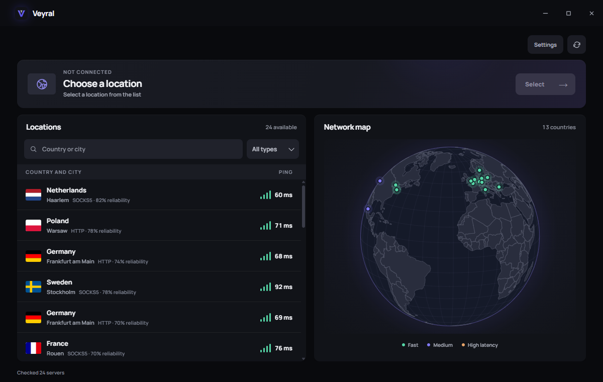

Find a location
Search a country or city.
Choose a country and city. See the connection quality before you connect. Take control of where your traffic goes.

THREE SIMPLE STEPS
Search a country or city.
Compare ping and availability.
Connect to your selected route.
DOWNLOAD VEYRAL
Get Veyral for your desktop. Choose your platform and download directly from the official release.